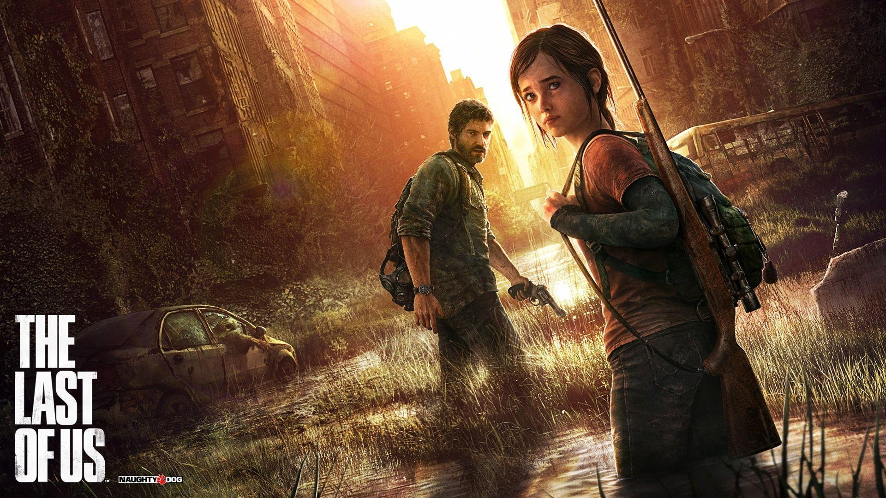
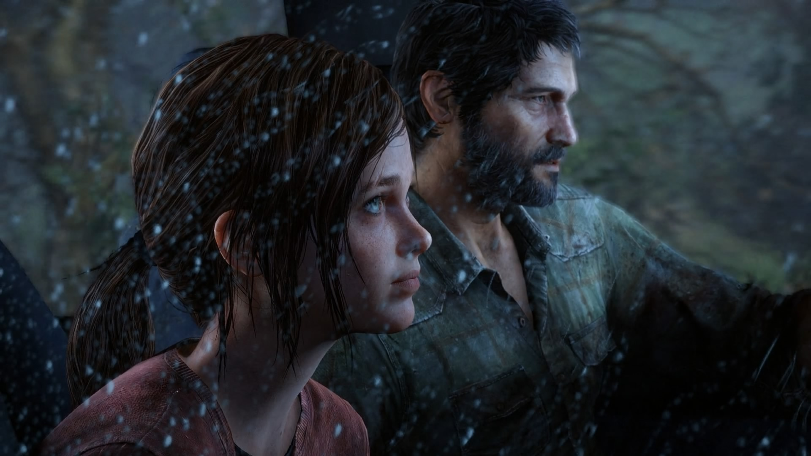
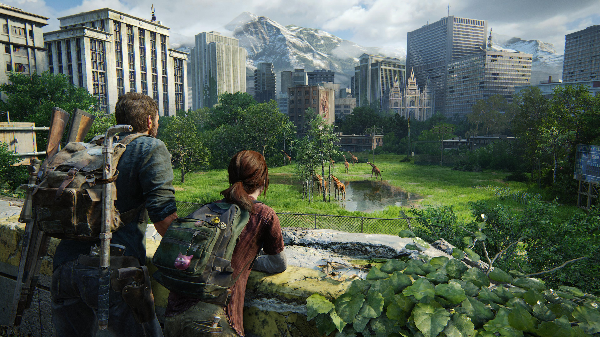
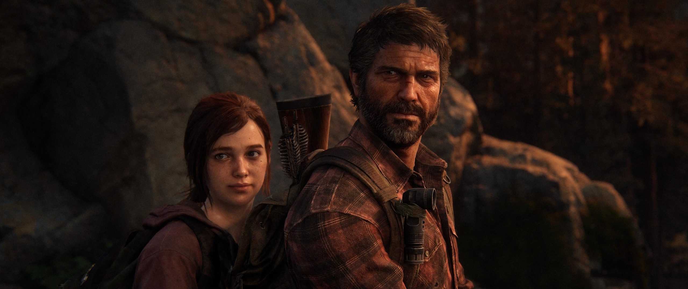
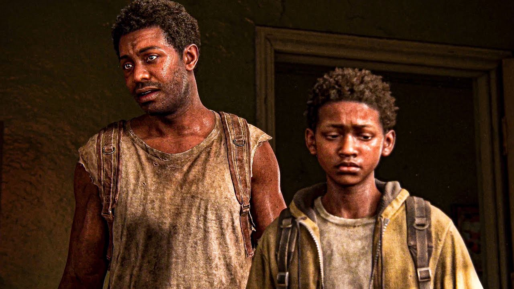

Razão para Criação
The Last of Us nasceu do desejo da Naughty Dog de contar uma história que fosse além da ação tradicional dos
videogames.
A ideia era mergulhar os jogadores em um mundo devastado por uma pandemia, mas que ao
mesmo tempo revelasse a beleza e a fragilidade das relações humanas.
Joel e Ellie não são apenas
personagens em busca de sobrevivência, mas símbolos de esperança, dor e amor em meio ao caos.
A
criação do jogo foi inspirada em narrativas cinematográficas intensas, trazendo uma experiência que mistura
tensão, emoção e dilemas morais, transformando-o em um marco na história dos games.
História Inicial
Joel volta lentamente a sentir algo parecido com esperança graças à presença de Ellie, enquanto ela
aprende a amadurecer em um mundo cruel que constantemente lhe tira pessoas importantes.
O final do jogo se tornou um dos mais debatidos da história dos games. Quando Joel descobre que a criação
da cura exigiria a morte de Ellie, ele toma uma decisão extremamente controversa: salvar Ellie mesmo que isso
custe a chance de salvar a humanidade.
O desfecho mostra como o amor pode ser capaz tanto de salvar
quanto de destruir pessoas, deixando um impacto emocional gigantesco nos jogadores.
Mesmo após tantos anos desde seu lançamento, The Last of Us continua sendo lembrado não apenas pela jogabilidade ou pelos gráficos,
mas principalmente pela forma como conseguiu emocionar milhões de pessoas ao redor do mundo.
A obra mostrou que videogames também podem contar histórias profundas e humanas, abordando temas como perda, sobrevivência, vingança e esperança de maneira extremamente marcante.
Seu legado permanece vivo tanto na indústria dos games quanto na memória dos jogadores, consolidando-se como uma das narrativas mais impactantes já criadas.


A vida de Ellie Williams: The Last of Us Part I e II
Ellie é muito mais do que uma protagonista: ela representa a força da juventude em um mundo que já não
oferece inocência.
Nascida em meio ao apocalipse, cresceu sem conhecer a normalidade, mas carregando
consigo um segredo que a torna única — sua imunidade ao fungo Cordyceps.
Ao longo da jornada, Ellie
revela coragem e vulnerabilidade, enfrentando perdas que moldam sua personalidade.
Seu humor
sarcástico contrasta com a dureza da realidade, e sua evolução, especialmente em The Last of Us Part II,
mostra uma jovem que amadurece diante da violência, da vingança e da difícil busca por sentido em um mundo
quebrado.
Ellie se tornou uma das personagens mais marcantes da história dos videogames justamente por transmitir emoções tão humanas em meio a um cenário tão brutal.
Sua trajetória mostra como o trauma, o amor e as perdas podem transformar alguém profundamente, fazendo com que ela carregue cicatrizes emocionais que vão muito além da sobrevivência física.
Mesmo em um mundo destruído, Ellie continua buscando motivos para seguir em frente, tentando encontrar algum significado em meio à dor e às consequências de suas escolhas.
Ao longo de sua jornada, é possível perceber como sua personalidade muda de forma intensa: a garota curiosa e irônica do primeiro jogo dá lugar a uma personagem mais madura, silenciosa e emocionalmente abalada em The Last of Us Part II.
Ainda assim, Ellie preserva traços de sensibilidade e humanidade que fazem os jogadores se conectarem profundamente com sua história. Sua complexidade emocional e seus conflitos internos ajudaram a transformar a personagem em um dos
maiores símbolos modernos da narrativa nos videogames, deixando uma marca extremamente forte na indústria e no público.


Do jogo para série: o Sucesso
Quando a HBO decidiu adaptar The Last of Us, o desafio era enorme: transformar uma obra já considerada uma
das melhores narrativas dos videogames em uma série capaz de emocionar tanto fãs quanto novos
espectadores.
O resultado foi uma produção que respeitou profundamente o material original, mas também
expandiu histórias secundárias, como a emocionante trajetória de Bill e Frank.
Pedro Pascal e Bella
Ramsey deram vida a Joel e Ellie com intensidade e autenticidade, conquistando o público.
A série
trouxe novas perspectivas, explorou detalhes do universo e mostrou que a força da história não está apenas
nos infectados, mas nas relações humanas e nos dilemas que surgem quando tudo parece perdido.
Além da fidelidade aos principais acontecimentos do jogo, a adaptação conseguiu aprofundar sentimentos,
conflitos e momentos que antes eram apenas sugeridos, permitindo que os personagens fossem ainda mais desenvolvidos.
A fotografia, a trilha sonora e a ambientação pós-apocalíptica ajudaram a criar uma experiência extremamente imersiva, mantendo a tensão e a emoção presentes em cada episódio.
O sucesso da série demonstrou como videogames podem ser adaptados com qualidade e respeito, consolidando ainda mais The Last of Us como uma das histórias mais impactantes da cultura contemporânea, tanto nos jogos quanto na televisão.